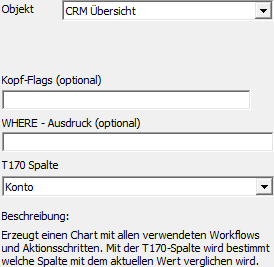
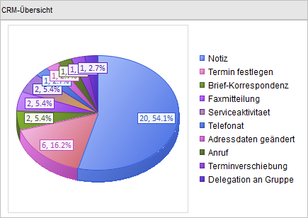

Mit Hilfe des Objekts "CRM Übersicht" werden alle Aktionen und Workflows eines Objekts als Grafik angezeigt. Als Key dient die "Nummer" des Eintrags unter "T170 Spalte" (d.h. Feld "Text" oder Bereich "View / Var" muss gefüllt sein).

Ø Kopf-Flags (optional)
In diese Felder können Flags hinterlegt werden, wenn nicht das Originalformular verwendet wird.
Ø WHERE - Ausdruck (optional)
Der WHERE - Ausdruck kann für eine Selektion der Datensätze verwendet werden und kann Einschränkungen auf die T170 enthalten.
Beispiel
ü WHERE (T170.C009 =
'<VAR:60/4>')
Zeigt alle Fälle des Kontos (T170.C009), welches im
Projektestamm hinterlegt ist. Dieses Statement wäre aber nur dann sinnvoll, wenn
intern ein Projekt geladen wurde (z.B. in der Projektinformation).
Ø T170 Spalte
Aus der Auswahlbox kann das Objekt ausgewählt werden, welches für den Vergleich mit der Variable herangezogen werden soll. Folgende Auswahlen stehen zur Verfügung:
ü Konto
ü Artikel
ü Projekt
ü Vertreter
ü Arbeitnehmer
Achtung
In Abhängigkeit des hier gewählten Objekts muss der Bereich "View / Var" bzw. das Feld "Text" gefüllt werden. D.h. im Konten-OIF muss der Wert der Spalte 55/2 (also die Kontonummer) als View / Var hinterlegt werden, als Objekt der T170-Spalte der Eintrag "Konto". Hierdurch werden nur die Einträge aus der T170 berücksichtigt, in denen die aktuelle Kontonummer hinterlegt ist.
Beispiel
Wenn die CRM-Übersicht z.B. im Backlog für Artikel eingebaut werden sollen, dann müsste als Variable 26/3 hinterlegt werden und als Objekt der T170-Spalte der Eintrag "Artikel".
Beispiel - Externes Objekt mit dem Typ "Objekt" - Objekt "CRM Übersicht"
